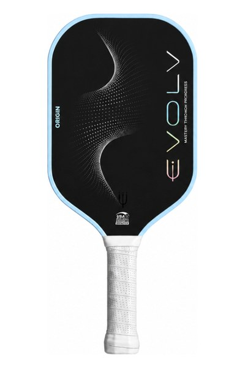
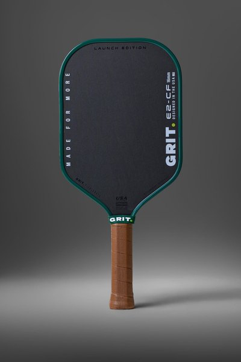

Which paddles are easiest on your arm?
Most “arm-friendly” claims are based on feel. We put sensors on the handle and the wrist and measure what actually reaches your arm. The Evolv (6 months of use) and the RPM Jade are the most arm-friendly so far; both Grit E2 CF versions are the firmest. Shopping for tennis elbow? See the ranking →
The Arm Score ranking
Higher is more arm-friendly. The reference paddle, the Grit E2 CF (new), scores 100. Tested Nov 21, 2026, one session (Franklin Dynasty Whip: Nov 23, second tester).
- 1Evolv (6 months of use) Used paddle144Most arm-friendly
- 2
 RPM Jade133Most arm-friendly
RPM Jade133Most arm-friendly - 3

Evolv Origin113Arm-friendly - 4Speedup Tide 14L (6 months of use) Used paddle110Arm-friendly
- 5
 Franklin Dynasty Whip Second tester*101Firmer
Franklin Dynasty Whip Second tester*101Firmer - 6

Grit E2 CF (new, reference) Reference100Firmer - 7Grit E2 CF (older version)99Firmer
Read close scores as ties. Scores within about 15 points of each other are effectively tied. The colors are a guide, not a hard line.
Full results
Lower is better in every column except Arm Score. Tap a column to sort. Tap a paddle to see its X-ray.
| 1 | Evolv (6 months of use) | 144 | 1.40 | 0.40 | 10.6 | 268 |
| 2 | RPM Jade | 133 | 1.89 | 0.24 | 9.4 | 406 |
| 3 | Evolv Origin | 113 | 1.70 | 0.60 | 10.6 | 352 |
| 4 | Speedup Tide 14L (6 months of use) | 110 | 1.86 | 0.46 | 13.1 | 440 |
| 5 | Franklin Dynasty Whip* Second tester | 101 | 1.88 | 0.81 | 10.3 | 327 |
| 6 | Grit E2 CF (new, reference) | 100 | 2.15 | 0.58 | 10.0 | 427 |
| 7 | Grit E2 CF (older version) | 99 | 2.27 | 0.59 | 10.0 | 355 |
* Franklin Dynasty Whip, second tester. Tested Nov 23, 2026 by a second tester (Daniel), with the Grit E2 CF reference in the same session. Its numbers are scaled to the reference so they line up with this table: compare them loosely. It ties the Grit overall: less shock and twist (it's heavier, swingweight 122 vs 110), but more buzz from its softer face.
How the Arm Score is built
Each measurement is compared with the reference paddle, then combined with these weights (a weighted geometric mean of reference ÷ paddle, × 100). Shock to the wrist counts most. Off-center shock comes from the center vs off-center split.
How forgiving is each paddle on a mishit?
Off-center hits sent 38–114% more shock to the wrist than center hits; the Evolvs were the most forgiving and the RPM Jade the least. Lower extra shock = more forgiving.
| Evolv (6 months of use) | 1.29 | 1.78 | +38% | 406 |
| Evolv Origin | 1.47 | 2.31 | +57% | 562 |
| Grit E2 CF (older version) | 1.45 | 2.60 | +79% | 530 |
| Speedup Tide 14L (6 months of use) | 1.37 | 2.50 | +83% | 738 |
| Grit E2 CF (new) | 1.36 | 2.52 | +85% | 617 |
| RPM Jade | 1.16 | 2.49 | +114% | 748 |
Franklin Dynasty Whip (second tester): off-center hits sent 40% more shock than center hits, the same as the Grit E2 CF in that session (+41%). It's shown as a note, not a row, because it was a different tester.
How we split them
The wrist gyroscope measures how much each hit twists the wrist. In each paddle’s test, the third of hits with the least twist count as center hits and the third with the most twist as off-center hits.
- The RPM Jade is the cleanest paddle on center hits (1.16 g) but jumps the most on mishits, which fits its low twistweight.
- Off-center hits mainly add jolt and twist, not more buzz.
- These were small mishits during center blocks, so bigger mishits may be worse.
- Early results: 7–8 hits per group, so treat small differences as ties.
RPM Jade has the stiffest face, Speedup Tide the softest
Ring frequency is the pitch the paddle vibrates at after impact. Higher means a stiffer, firmer face. It repeats within about 2% across days.
- * RPM Jade's buzz is dominated by a higher vibration mode; its value may overstate stiffness.
- A stiff face is not automatically harsh on the arm. The Jade and the Evolvs are among both the stiffest and the most arm-friendly.
- Weight also affects pitch: a lighter paddle rings higher.
- The Franklin Dynasty Whip was tested by a second tester on Nov 23; its value is approximate.
- RPM V2 and Gearbox Pressure X 8M have stiffness data but no Arm Score yet. They were tested before the controlled protocol.
Do grip upgrades protect your arm?
Our Nov 23 grip test: Daniel's Franklin Dynasty Whip in 6 setups, with the Grit E2 CF reference at the start and end of the session (corrected for player fatigue). Arm Score: Grit E2 CF = 100.
| Franklin Dynasty Whip setup | Arm Score | What changed vs factory |
|---|---|---|
| Factory grip | 101 | Baseline |
| + Overgrip | 100 | No change in shock; paddle twisted ~24% more in hand |
| Bare handle + overgrip | 98 | No real change |
| Hesacore + overgrip | 96 | No measurable benefit; adds ~17 g to the handle |
| + Overgrip + 6 g lead | 96 | Lead cut twist, no change in shock |
| + 6 g lead (3 & 9 o'clock) | not scored* | ~14% less twist, steadier paddle |
* That run had softer ball contact, which inflates its score.
How we test
Every paddle gets the same controlled test, so the numbers compare fairly.
Factory setup
Every paddle is tested with its factory grip and no added weight: no overgrip, no lead tape.
Sensors
One motion sensor on the handle (1″ below the face) and one on the back of the wrist, recording 1,600 times per second. The wrist sensor also has a gyroscope to measure twist.
Shot
Passive forehand blocks at the center of the face, fed by a ball machine at the same speed and setting for every paddle.
Hits
About 25 per paddle. Mishits are filtered out automatically.
Reference paddle
The Grit E2 CF (new) is tested in every session and scores 100, so results from different days line up.
What the numbers mean
- Arm Score
- One overall number for arm comfort. Higher is friendlier; 100 = the reference paddle.
- Shock to wrist
- The jolt your wrist feels in the first tenth of a second after impact. Lower is gentler.
- Buzz at wrist
- How much of the paddle's ringing vibration reaches your wrist. Lower means less buzz.
- Buzz fade
- How long the paddle keeps ringing after the hit. Shorter feels cleaner.
- Wrist twist
- How hard the hit rotates your wrist. Lower means a more stable paddle.
- Ring frequency
- The pitch the paddle vibrates at. A higher pitch means a stiffer, firmer face.
Notes and limits
These are early results from one tester; treat close scores as ties.
- One player: results reflect one arm and grip style. Rankings may shift for other players.
- Repeatability: ring frequency repeats within about 2% across days. Shock values depend on test conditions, so they are compared only within the same session.
- Paddle age matters: the Evolv (6 months) and Speedup Tide were used paddles; a new copy may score differently.
- Not medical advice: the test measures vibration and comfort, not injury risk.
- Second tester: the Franklin Dynasty Whip was tested by a second player (Daniel) and scaled to the shared reference paddle; compare it loosely.
- Coming next: more paddles, repeat runs on different days, more second-tester checks, and a blind feel test against the Arm Score.
Last updated: Nov 23, 2026